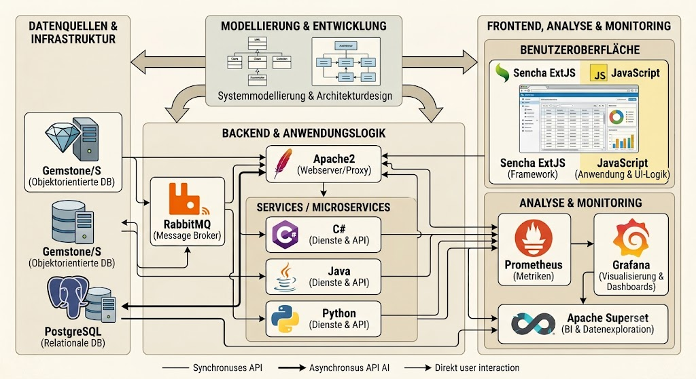

|
<< Click to Display Table of Contents >> Navigation: »No topics above this level« PAS - PUM Application Stack |

Während meiner Arbeit mit Gemstone/S hat es sich gezeigt, daß ich immer wieder und wieder die gleichen Komponenten einsetze. Daraus wurde über die Zeit der PAS - der PUM Application Stack - manchmal nenne ich es auch PGAS - der PUM/Gemstone Application Stack.
Bei meinen Projekten hat sich das Zusammenspiel der folgenden Systeme bewährt:
•Gemstone/S - Anwendungs(-logik) und Anwendungsdatenbank, kommerzielles Produkt
•Sencha ExtJS - Javascript-Bibliothek für Endanwendungen im Browser, kommerzielles Produkt
•PUM - Modelling Tool zwecks Codeerzeugung für Gemstone/S und Ext JS, Python, C# und Java, OpenSource, kostenlos
•RabbitMQ - Kommunikationstools zwischen allen Komponenten und auch den Endanwendern (RabbitMQ Plugin MQTT via WebSocket, MQTT via TCPIP ), OpenSource, kostenlos
•PostgreSQL - Datenbank für Export von Daten, OpenSource, kostenlos
•Apache2 - Frontend für HTTP-Bearbeitung, OpenSource, kostenlos
•Prometheus - Open Source Projekt, um Kernzahlen von Systemen abzufragen.
•Grafana - OpenSource Projekt, um Daten von Prometheus zu visualisieren
•Apache Superset - Und wenn man PostgreSQL in der Lösung hat, dann sollte man sich Superset zwecks Auswertung der Daten anschauen. Allerdings: sehr steile Lernkurve, erfordert viele Resourcen und kann sehr, sehr komplex werden. OpenSource, kostenlos
Über die Zeit hat sich auch meine Sichtweise auf Smalltalk verändert. Am Anfang wollte ich große Teile der Logik in Smalltalk implementieren, also in Gemstone/S. Zusatzpakete über Zusatzpakete kamen hinzu und am Ende war das ein Konfigurationswirrwar, so daß ich nun den anderen Weg einschlage. Nutzung des Seaside-Images von Gemstone/S (ohne Seaside zu nutzen), einige wenige Smalltalk -Bibliotheken von ausserhalb und dann noch meine beiden Bibliotheken mit der Anwendungslogik.
Zielsetzung ist also definiert nicht: Smalltalk everywhere. Vielmehr ist die Zielsetzung, daß man - um Smalltalk zu unterstützen - die Interaktion verschiedener Systeme erleichtert und eine Umgebung schafft, in der Gemstone/S mit seinen Stärken sich hervortun kann und wo man auch die Schwächen (ja, die gibt es) reduziert.
Die Stärke von Gemstone/S ist die schnelle Persistenz von Objektstrukturen. Man benötigt kein Session-Cachings mehr - Gemstone/S ist schnell genug dafür.
PAS ist eine Ablaufumgebung, in der Server-Anwendungen laufen sollen. Dazu werden die oben genannten Komponenten primär genutzt. Die resultierenden Anwendungen werden nur über eine API angesprochen, die über http(s) aufgerufen wird und eher als eine RPC-API angesehen wird - wenn auch Elemente aus REST vorhanden sind (z.B. CRUD). Aber es ich auch nicht RPC-JSON: RPC-JSON wurde nahezu zur gleichen Zeit entwickelt als ich anfing mit Gemstone/S. Es war mir also komplett unbekannt und ich hätte es in dieser Form auch nicht implementiert.